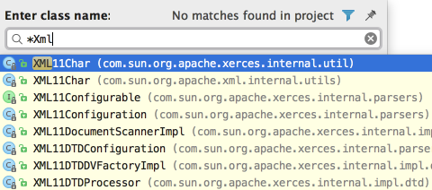

For the pattern search in the Go to Class, Go to Symbol and Go to File pop-up frames, use * and space symbols.
* stands for any symbols.
Space at the end means the end of a pattern, and the preceding string will be considered not just a prefix but a whole pattern. The list of the suggested names will be reduced accordingly.
